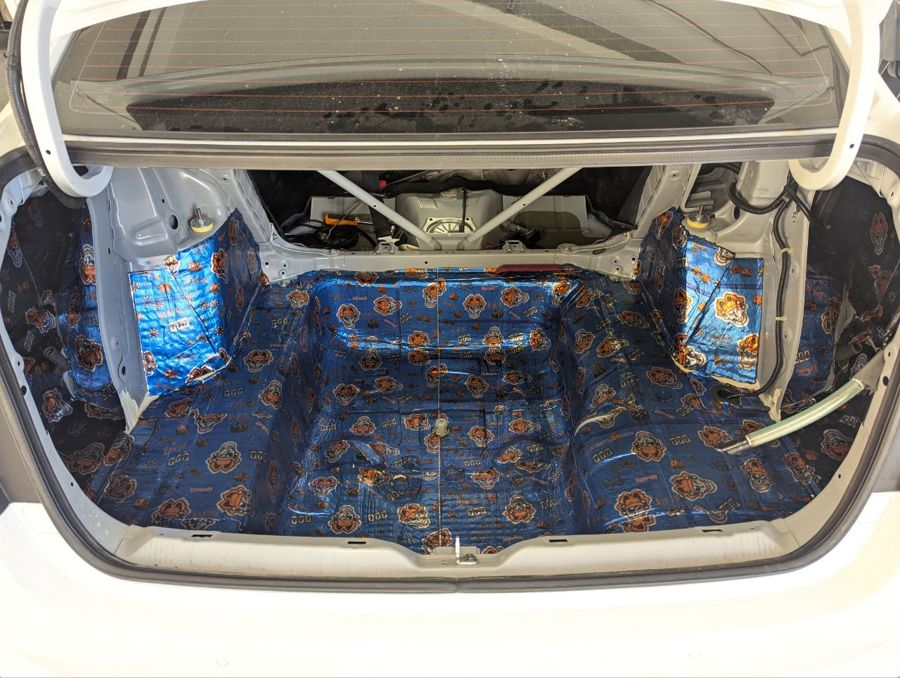

Послушать итог голосом. Ничего не опубликовано.
Картинки по реальной погоде в Новосибирске на 06.11: около нуля, тонкий снег, мокрый асфальт, голые берёзы.
| Кто | Ситуация | За что платит |
|---|---|---|
| Ездит по делам между городами | Томск, Омск, Кемерово и обратно за день | Приехать на встречу в форме |
| Едет с семьёй | К родителям, в отпуск, на Алтай | Ребёнок спит, разговор без крика |
| Купил хорошую машину | За такие деньги ждал тишины | Чтобы машина ощущалась на свою цену |
Хватает одной такой поездки. Третий тип мой, поправь, если не так.
Внимание → проблема → исследование одним слайдом → с семьёй то же → что делаем → цена → кейс → «Напишите нам в группу».
Исследование поездок: на трассе устают не от дороги, а от шума.
Едете по делам между городами или с семьёй: Томск, Омск, Алтай. Приехали, а голова уже гудит.
Делаем шумоизоляцию в Новосибирске. В салоне тише, разговор без крика, музыка не на максимуме.
Напишите нам в группу марку, модель и год: vk.me/teyes.magnitola
Скажем, с какой зоны начать и сколько это будет стоить. Сухарная 35, корпус 13.
А как у вас в дороге: прибавляете музыку или едете так?
То же без цены. В конце: комментарий, ЛС, контакты в шапке профиля.
Исследование поездок: на трассе устают не от дороги, а от шума.
Совет от мастера: перед следующей поездкой послушайте свою машину. Выключите музыку и вентилятор, слушает пассажир.
Где шумит:
Начните с зоны, где громче всего. Можно с одной, можно всю машину.
Мы в Новосибирске делаем шумоизоляцию авто. Оставьте комментарий или напишите в личные сообщения: марка, модель и что шумит. Контакты в шапке профиля.
Отправьте тому, кто скоро едет с семьёй или по делам в другой город.
Запасной заголовок: Исследование поездок: на трассе устают не от дороги, а от шума.
Гудок фуры – и левое колесо уже за разметкой.
Знакомо? Вы выехали затемно. Впереди 600 км, мокрый асфальт, брызги на стекле, фуры одна за другой.
После обеда музыку делаете громче: её плохо слышно. С пассажиром говорите на повышенных, потом он замолкает.
К вечеру гудит голова. Вы не спите, просто на секунду задумались.
И тут гудок. Свет в лицо. Фура там, где её быть не должно.
Рывок вправо. Мимо. Руки разжимаются не сразу.
«Устал, – думаете вы. – Дорога длинная».
Весь день с вами в салоне ехал ещё кое-кто. Шум.
Шведы проверяли это на грузовиках: в машинах с сильным низким гулом водители уставали быстрее.
Послушайте свою машину. На следующей трассе выключите музыку на десять минут. Гудит снизу, свистит у зеркала, дребезжит в двери, скрипит сзади?
А если клонит в сон – сразу съезжайте и останавливайтесь.
Шумоизоляция делается так: разбирают салон, клеят виброизоляцию и шумопоглотитель на двери, пол, арки и собирают обратно без следов.
В салоне становится тише: меньше шелеста, дребезга и скрипов. С пассажиром говорите без крика, музыка больше не на максимуме.
Всю машину сразу делать не обязательно. На Honda Envix, например, обработали только заднюю часть: багажник, задние арки, ниши и заднюю полку.

Реальная работа, Honda Envix.
Если вы в Новосибирске, напишите в TEYES Sibir марку, модель, год и что именно шумит – подскажут, с чего начать: шумоизоляция автомобиля.
Как уменьшить шум в салоне автомобиля: найдите, откуда он идёт, и закройте эти зоны виброизоляцией и шумопоглотителем. Шелеста, дребезга и скрипов становится меньше, с пассажиром можно говорить без крика, а музыку не нужно держать на максимуме.
Зоны, сроки и цены – на странице о шумоизоляции в TEYES Sibir.
На трассе устают не только от дороги, но и от шума. Шведы проверяли это на грузовиках: с сильным низким гулом водители уставали быстрее (Лёфстедт, Ландстрём, 1987).
Знакомая картина: за 400–600 км музыка становится всё громче, с пассажиром говорите на повышенных, а вечером гудит голова. В тихом салоне ехать легче.
Работают два слоя. Виброслой успокаивает металл, поэтому панели меньше дребезжат. Шумопоглотитель работает с воздушным звуком, поэтому меньше шелеста от дороги. Клеим оба.
В поездке это заметно так:
Прежде чем выбирать, послушайте машину на знакомом участке. Запомните, на какой скорости появляется шум, откуда идёт и на что похож: гул, шелест, дребезг или скрип. Дальше всё просто.
Разбираем салон, клеим виброизоляцию и шумопоглотитель на нужные зоны, собираем обратно без следов. Если при разборке найдём коррозию или забитые дренажи, покажем.
На Honda Envix сделали заднюю часть: багажник, задние арки, ниши, заднюю полку. Багажник разобрали до металла, очистили и обезжирили, первым слоем положили вибродемпфер, на отдельные зоны – второй, шумопоглощающий. Потом собрали и проверили крепления и зазоры.
Да. Начните с той, откуда шумит сильнее всего, поездите и послушайте на том же участке и на той же скорости. Потом решите, идти ли дальше по одной зоне или сделать всю машину.
Цена считается по зоне и классу машины. Цены по зонам есть на странице услуги, а точный расчёт сделаем по вашей марке, модели и году.
Да, полный комплект – это десятки килограммов. Сколько выйдет на вашей машине, скажем до работ.
Марку, модель, год и что именно шумит. Хватит одного сообщения своими словами: «гудит снизу на трассе» или «дребезжит правая дверь».
Напишите марку, модель, год и что именно шумит – подскажем, с какой зоны начать. Все зоны – на странице о шумоизоляции автомобиля.
Telegram @teyesnsk, ВКонтакте vk.me/teyes.magnitola, телефон +7 (995) 437-92-66. Новосибирск, Сухарная 35, корпус 13.
Шумоизоляция авто в Новосибирске у нас, в TEYES Sibir, стоит от 2 500 ₽ за двери, вся машина – от 24 000 ₽ и 2 дня. Первой берите зону, откуда сильнее всего слышен шум: платить сразу за весь кузов не обязательно.
| Что делаем | Цена | Сколько времени |
| Вся машина, комплекс | от 24 000 ₽ | 2 дня |
| Двери | от 2 500 ₽ | 5 часов |
| Пол | от 8 000 ₽ | 6 часов |
| Арки | от 10 000 ₽ | 6 часов |
| Багажник | от 7 000 ₽ | 6 часов |
| Крыша | от 4 000 ₽ | 4 часа |
| Капот | от 4 000 ₽ | 2 часа |
| Торпедо | от 10 000 ₽ | 6 часов |
| Антискрип | от 1 500 ₽ | назовём по машине |
Цены с нашего сайта на 06.11.2026. Сумма считается по классу автомобиля: точную назовём после марки, модели и года.
Снимаем обшивку выбранной зоны и подготавливаем металл. На него ложится вибродемпфер, поверх него там, где нужно, – шумопоглощающий материал. Затем детали возвращаются на штатные места, следов разбора не остаётся. В итоге в салоне становится тише: меньше дорожного шума, дребезга и скрипов.
Подсказка здесь – характер звука в вашей машине:
| Что слышите | С чего начать |
| Снизу и от колёс | арки, затем пол |
| Сбоку, дребезжит дверь | двери |
| Сзади, со стороны багажника | багажник |
| Мотор при наборе скорости | капот, затем торпедо |
| Трещит пластик, скрипит обшивка | антискрип |
| Мешает всё сразу и вы много ездите по межгороду | комплекс |
Если сомневаетесь, опишите звук своими словами, и мастер предложит порядок.
Пройти можно и поэтапно: сделали одну часть, поездили, потом решили про вторую.
На Honda Envix сделали заднюю часть: багажник, задние арки, ниши и заднюю полку.
Для расчёта хватит четырёх вещей: марка, модель, год и что именно беспокоит. Полный комплект – это десятки килограммов, вес скажем до работ. Зоны и актуальные цены – на странице услуги.